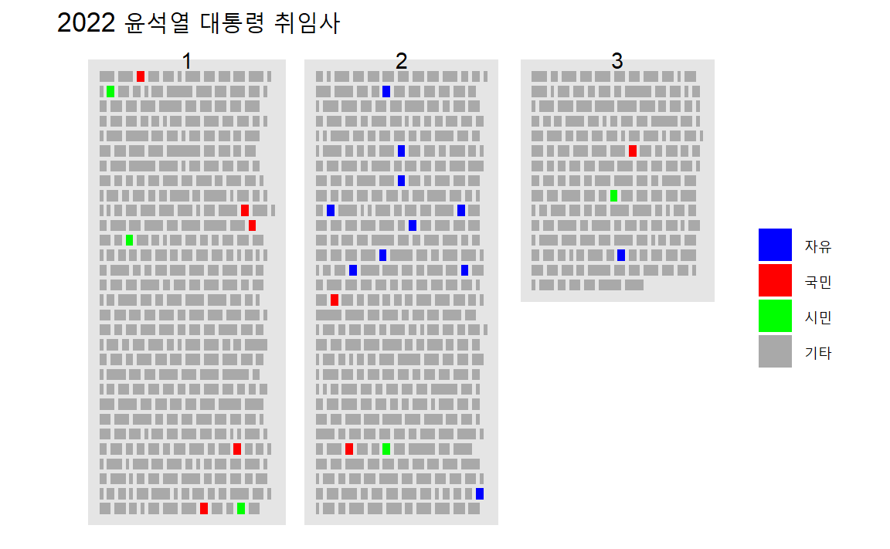

4 . 텍스트 살펴보기
4.1 특정 단어 강조
윤석열 대통령 취임사 텍스트를 취임사_윤석열.txt 파일로 저장한 후에
특정 단어 자유 를 탐색하여 색상을 달리하여 출력해보자.
## 기본 텍스트 패키지
library(tidyverse)
library(tidytext)
## 한국 텍스트 처리 패키지
# library(RMeCab)
# library(bitTA)
## 글 색상
library(glue)
library(crayon)
library(fansi)
options(crayon.enabled = TRUE)
yoon_raw <- read_lines("data/취임사_윤석열.txt")
yoon_txt <- yoon_raw[yoon_raw !=""]
crayon_words <- function(input_text, word = "자유") {
replaced_text <- str_replace_all(input_text, word, "{red {word}}")
for(i in 1:length(replaced_text)) {
crayon_text <- glue::glue_col(deparse(replaced_text[[i]]))
print(crayon_text)
}
}
crayon_words(input_text = yoon_txt, "자유")## "존경하고 사랑하는 국민 여러분,"
## "750만 재외동포 여러분,"
## "그리고 자유를 사랑하는 세계 시민 여러분,"
## "저는 이 나라를 자유민주주의와 시장경제 체제를 기반으로 국민이 진정한 주인인 나라로 재건하고, 국제사회에서 책임과 역할을 다하는 나라로 만들어야 하는 시대적 소명을 갖고 오늘 이 자리에 섰습니다."
## "역사적인 자리에 함께해 주신 국민 여러분께 감사드립니다."
## "문재인, 박근혜 전 대통령, 그리고 할리마 야콥 싱가포르 대통령, 포스탱 아르샹쥬 투아데라 중앙아프리카공화국 대통령, 왕치산 중국 국가부주석, 메가와티 수카르노푸트리 인도네시아 전 대통령, 더글러스 엠호프 해리스 미국 부통령 부군, 조지 퓨리 캐나다 상원의장, 하야시 요시마사 일본 외무상을 비롯한 세계 각국의 경축 사절과 내외 귀빈 여러분께도 깊이 감사드립니다."
## "이 자리를 빌려 지난 2년간 코로나 팬데믹을 극복하는 과정에서 큰 고통을 감내해주신 국민 여러분께 경의를 표합니다."
## "그리고 헌신해주신 의료진 여러분께도 감사드립니다."
## "존경하는 국민 여러분,"
## "세계 시민 여러분,"
## "지금 전 세계는 팬데믹 위기, 교역 질서의 변화와 공급망의 재편, 기후 변화, 식량과 에너지 위기, 분쟁의 평화적 해결의 후퇴 등 어느 한 나라가 독자적으로, 또는 몇몇 나라만 참여해서 해결하기 어려운 난제들에 직면해 있습니다."
## "다양한 위기가 복합적으로 인류 사회에 어두운 그림자를 드리우고 있는 것입니다."
## "또한 우리나라를 비롯한 많은 나라들이 국내적으로 초저성장과 대규모 실업, 양극화의 심화와 다양한 사회적 갈등으로 인해 공동체의 결속력이 흔들리고 와해되고 있습니다."
## "한편, 이러한 문제들을 해결해야 하는 정치는 이른바 민주주의의 위기로 인해 제 기능을 하지 못하고 있습니다."
## "가장 큰 원인으로 지목되는 것이 바로 반지성주의입니다."
## "견해가 다른 사람들이 서로의 입장을 조정하고 타협하기 위해서는 과학과 진실이 전제되어야 합니다."
## "그것이 민주주의를 지탱하는 합리주의와 지성주의입니다."
## "국가 간, 국가 내부의 지나친 집단적 갈등에 의해 진실이 왜곡되고, 각자가 보고 듣고 싶은 사실만을 선택하거나 다수의 힘으로 상대의 의견을 억압하는 반지성주의가 민주주의를 위기에 빠뜨리고 민주주의에 대한 믿음을 해치고 있습니다."
## "이러한 상황이 우리가 처해있는 문제의 해결을 더 어렵게 만들고 있습니다."
## "그러나 우리는 할 수 있습니다."
## "역사를 돌이켜 보면 우리 국민은 많은 위기에 처했지만 그럴 때마다 국민 모두 힘을 합쳐 지혜롭게, 또 용기있게 극복해 왔습니다."
## "저는 이 순간 이러한 위기를 극복하는 책임을 부여받게 된 것을 감사한 마음으로 받아들이고, 우리 위대한 국민과 함께 당당하게 헤쳐 나갈 수 있다고 확신합니다."
## "또 세계 시민과 힘을 합쳐 국내외적인 위기와 난제들을 해결해 나갈 수 있다고 믿습니다."
## "존경하는 국민 여러분,"
## "세계 시민 여러분,"
## "저는 이 어려움을 해결해 나가기 위해서 우리가 보편적 가치를 공유하는 것이 매우 중요하다고 생각합니다."
## "그것은 바로 ‘자유’입니다."
## "우리는 자유의 가치를 제대로, 그리고 정확하게 인식해야 합니다."
## "자유의 가치를 재발견해야 합니다."
## "인류 역사를 돌이켜보면 자유로운 정치적 권리, 자유로운 시장이 숨 쉬고 있던 곳은 언제나 번영과 풍요가 꽃 피었습니다."
## "번영과 풍요, 경제적 성장은 바로 자유의 확대입니다."
## "자유는 보편적 가치입니다."
## "우리 사회 모든 구성원이 자유 시민이 되어야 하는 것입니다."
## "어떤 개인의 자유가 침해되는 것이 방치된다면 우리 공동체 구성원 모두의 자유마저 위협받게 됩니다."
## "자유는 결코 승자독식이 아닙니다."
## "자유 시민이 되기 위해서는 일정한 수준의 경제적 기초, 그리고 공정한 교육과 문화의 접근 기회가 보장되어야 합니다."
## "이런 것 없이 자유 시민이라고 할 수 없습니다."
## "어떤 사람의 자유가 유린되거나 자유 시민이 되는데 필요한 조건을 충족하지 못한다면 모든 자유 시민은 연대해서 도와야 합니다."
## "그리고 개별 국가뿐 아니라 국제적으로도 기아와 빈곤, 공권력과 군사력에 의한 불법 행위로 개인의 자유가 침해되고 자유 시민으로서의 존엄한 삶이 유지되지 않는다면 모든 세계 시민이 자유 시민으로서 연대하여 도와야 하는 것입니다."
## "모두가 자유 시민이 되기 위해서는 공정한 규칙을 지켜야 하고, 연대와 박애의 정신을 가져야 합니다."
## "존경하는 국민 여러분,"
## "국내 문제로 눈을 돌려 제가 중요하게 생각하는 방향에 대해 말씀드리겠습니다."
## "우리나라는 지나친 양극화와 사회 갈등이 자유와 민주주의를 위협할 뿐 아니라 사회 발전의 발목을 잡고 있습니다."
## "저는 이 문제를 도약과 빠른 성장을 이룩하지 않고는 해결하기 어렵다고 생각합니다."
## "빠른 성장 과정에서 많은 국민이 새로운 기회를 찾을 수 있고, 사회 이동성을 제고함으로써 양극화와 갈등의 근원을 제거할 수 있습니다."
## "도약과 빠른 성장은 오로지 과학과 기술, 그리고 혁신에 의해서만 이뤄낼 수 있는 것입니다."
## "과학과 기술, 그리고 혁신은 우리의 자유민주주의를 지키고 우리의 자유를 확대하며 우리의 존엄한 삶을 지속 가능하게 할 것입니다."
## "과학과 기술, 그리고 혁신은 우리나라 혼자만의 노력으로는 달성하기 어렵습니다."
## "자유와 창의를 존중함으로써 과학 기술의 진보와 혁신을 이뤄낸 많은 나라들과 협력하고 연대해야만 합니다."
## "존경하는 국민 여러분,"
## "세계 시민 여러분,"
## "자유민주주의는 평화를 만들어내고, 평화는 자유를 지켜줍니다."
## "그리고 평화는 자유와 인권의 가치를 존중하는 국제사회와의 연대에 의해 보장이 됩니다."
## "일시적으로 전쟁을 회피하는 취약한 평화가 아니라 자유와 번영을 꽃피우는 지속 가능한 평화를 추구해야 합니다."
## "전 세계 어떤 곳도 자유와 평화에 대한 위협에서 자유롭지 못합니다."
## "지금 한반도와 동북아의 평화도 마찬가지입니다."
## "저는 한반도뿐 아니라 아시아와 세계의 평화를 위협하는 북한의 핵 개발에 대해서도 그 평화적 해결을 위해 대화의 문을 열어놓겠습니다."
## "그리고 북한이 핵 개발을 중단하고 실질적인 비핵화로 전환한다면 국제사회와 협력하여 북한 경제와 북한 주민의 삶의 질을 획기적으로 개선할 수 있는 담대한 계획을 준비하겠습니다."
## "북한의 비핵화는 한반도에 지속 가능한 평화를 가져올 뿐 아니라 아시아와 전 세계의 평화와 번영에도 크게 기여할 것입니다."
## "사랑하고 존경하는 국민 여러분,"
## "지금 우리는 세계 10위권의 경제 대국 그룹에 들어가 있습니다."
## "그러므로 우리는 자유와 인권의 가치에 기반한 보편적 국제 규범을 적극 지지하고 수호하는데 글로벌 리더 국가로서의 자세를 가져야 합니다."
## "우리나라뿐 아니라 세계 시민 모두의 자유와 인권을 지키고 확대하는데 더욱 주도적인 역할을 해야 합니다."
## "국제사회도 대한민국에 더욱 큰 역할을 기대하고 있음이 분명합니다."
## "지금 우리나라는 국내 문제와 국제 문제를 분리할 수 없습니다."
## "국제사회가 우리에게 기대하는 역할을 주도적으로 수행할 때 국내 문제도 올바른 해결 방향을"
## "찾을 수 있는 것입니다."
## "저는 자유, 인권, 공정, 연대의 가치를 기반으로 국민이 진정한 주인인 나라, 국제사회에서 책임을 다하고 존경받는 나라를 위대한 국민 여러분과 함께 반드시 만들어 나가겠습니다."
## "감사합니다."
4.2 단어 위치
윤석열 대통령 취임사에서 가장 빈도수가 높은 명사 5개를 찾아낸다. 이를 위해서 먼저 텍스트를 각행별로 텍스트를 데이터프레임으로 변환시킨다. 그리고 나서 메카브(MeCab) 형태소 분석기를 사용해서 연설문 형태소 분석을 수행하고 명사만 추출한 후에 가장 빈도수가 높은 단어 3개를 뽑아낸다.
library(RcppMeCab)
library(tidytext)
yoon_tbl <- yoon_txt %>%
enframe(name = "행", value = "text") %>%
filter(text != "")
youn_noun <- yoon_tbl %>%
unnest_tokens( output = 분석_텍스트,
input = text,
token = RcppMeCab::pos) %>%
separate(분석_텍스트, c("명사", "형태소"), sep = "/") %>%
filter(형태소 == "nng") %>%
count(명사, sort = TRUE, name = "빈도수")
youn_top_three <- youn_noun %>%
slice_max(빈도수, n = 3) %>%
pull(명사)
youn_top_three## [1] "자유" "국민" "시민"
윤 대통령 취임사에서 가장 많이 언급된 명사 3개(자유, 국민, 시민)가 취임사 어느
부분에 위치하는지 시각화를 한다. 이를 위해서 ggpage
패키지를 활용하여 ggpage_build() 함수와 ggpage_plot() 함수를 사용하여 깔끔하게 시각화한다.
library(ggpage)
yoon_tbl %>%
ggpage_build(wtl = TRUE, lpp = 30, x_space_pages =10, y_space_pages = 0, nrow = 1) %>%
unnest_tokens( output = 분석_텍스트,
input = word,
token = RcppMeCab::pos,
drop = FALSE) %>%
separate(분석_텍스트, c("명사", "형태소"), sep = "/") %>%
mutate(highlight = case_when(명사 %in% c("자유") ~ "자유",
명사 %in% c("국민") ~ "국민",
명사 %in% c("시민") ~ "시민",
TRUE ~ "기타")) %>%
mutate(highlight = factor(highlight, levels=c("자유", "국민", "시민", "기타"))) %>%
ggpage_plot(aes(fill = highlight),
paper.show = TRUE, page.number = "top", paper.limits = 3) +
scale_fill_manual(values = c("blue", "red", "green", "darkgray")) +
labs(title = "2022 윤석열 대통령 취임사",
fill = NULL) +
theme_void(base_family = "NanumGothic") 
4.3 취임사 요약
Ainize Teachable-NLP를 사용한 kobart 문서요약 텍스트/신문기사를 사용하여 윤 대통령 취임사를 요약한다.
from transformers import PreTrainedTokenizerFast, BartForConditionalGeneration
# 사전 훈련 토큰, 모형 다운로드
tokenizer = PreTrainedTokenizerFast.from_pretrained("ainize/kobart-news")
model = BartForConditionalGeneration.from_pretrained("ainize/kobart-news")
# 입력 텍스트
with open('data/취임사_윤석열.txt') as f:
input_text = f.read()
import re
input_text = re.sub(r"\n", " ", input_text)
input_ids = tokenizer.encode(input_text, return_tensors="pt")
# Generate Summary Text Ids
summary_text_ids = model.generate(
input_ids=input_ids,
bos_token_id=model.config.bos_token_id,
eos_token_id=model.config.eos_token_id,
length_penalty=2.0,
max_length=142,
min_length=56,
num_beams=4,
)
# Decoding Text
print(tokenizer.decode(summary_text_ids[0], skip_special_tokens=True))